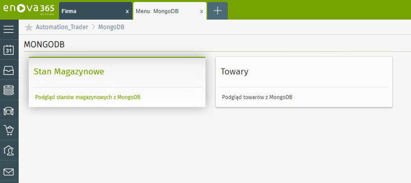
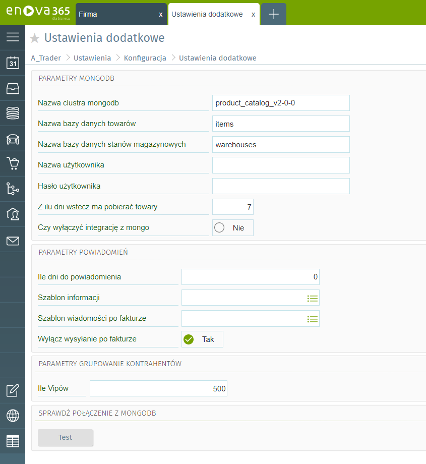

Dokumentacja mechanizmu obustronnej integracji pomiędzy programem Enova365 i bazą MongoDB
Wstęp:
Mechanizm ten ma na celu wykonywać obustronną wymianę danych pomiędzy bazą MongoDB oraz bazą programu Enova365.
Towary:
Mechanizm pod względem towarów wykonuje następujące czynności:
- Wysyła nowo utworzone towary w programie Enova365 do bazy MongoDB
- Wysyła do programu Enova365 nowo utworzone towary po stronie bazy MongoDB
- Aktualizuje towary
- Usuwa towary (zmienia wpisy produktów "isHistorical = true")
- W momencie utworzenia nowej kartoteki towarowej w programie Enova365 mechanizm w trakcie zapisywania sprawdza czy dodany towar istnieje w bazie MongoDB. Jeśli dodawany przez nas towar nie znajduje się w bazie MongoDB mechanizm automatycznie tworzy nowy wpisy w bazie.
- Dodatek harmonogramu zadań będzie cyklicznie sprawdzał co określony czas czy po stronie bazy MongoDB został dodany jakiś nowy towar. W przypadku gdy harmonogram znajdzie towar w bazie MongoDB który nie znajduje się w programie Enova365 mechanizm automatycznie utworzy w programie nową kartotekę towarową na podstawie danych z MongoDB oraz zaktualizuje je o numer Guid z programu Enova365.
- W momencie zapisywania zmian na kartotece towaru mechanizm automatycznie wyszuka towar w bazie MongoDB i zaktualizuje wpis w bazie o nowe dane.
- W momencie usunięcia towaru po stronie programu Enova365 mechanizm automatycznie zaktualizuje wpis w bazie MongoDB dla tego towaru w polu isHistorical na true.
Stany magazynowe:
Mechanizm pod względem stanów magazynowych wykonuje następujące czynności:
- Tworzy nowe wpisy po stronie bazy MongoDB
- Tworzy dokumenty przyjęcia/wydania po stronie programu Enova365
- Aktualizuje stany magazynowe towarów po obu stronach
- Mechanizm w momencie zatwierdzania dokumentów handlowych sprawdza aktualny stan magazynowy towaru. Następnie łączy się z bazą MongoDB i sprawdza czy istnieje wpis z towarem z dokumentu. Jeśli takowy nie istnieje mechanizm automatycznie dodaje wpis do bazy MongoDB z aktualnym stane towaru.
- Dodatek harmonogramu zadań cyklicznie co określony czas będzie sprawdzał czy w programie Enova365 stany magazynowe towarów są takie same jak w bazie MongoDB. W przypadku gdy mechanizm znajdzie jakieś różnice automatycznie utworzy dokument przychodu wewnętrznego (PW MONGO) w przypadku gdy stan magazynowy po stronie programu Enova365 będzie mniejszy niż w bazie MongoDB oraz dokument rozchodu wewnętrznego (RW MONGO) w przypadku gdy stan magazynowy towaru po stornie programu Enova365 będzie większy niż w bazie MongoDB.
- Mechanizm w momencie zatwierdzania nowych dokumentów handlowych oraz zatwierdzania jakichkolwiek zmian na dokumentach handlowych powodujących ruch magazynowy sprawdza aktualny stan magazynowy towaru. Następnie łączy się z bazą MongoDB i sprawdza czy istnieje wpis z towarem z dokumentu. Jeśli takowy istnieje to program automatycznie aktualizuje wpis w bazie o aktualne wartości. W drugą stronę natomiast dodatek harmonogramu zadań będzie sprawdzać czy stan w bazie MongoDB jest taki sam jak w programie Enova365. Jeśli napotka jakieś różnice to utworzy dokumenty PW MONGO/ RW MONGO w zależności od róznicy.
Podgląd danych:
W zakładce MongoDB mamy dostępne dwie zakładki umożliwiające nam podgląd danych z bazy MongoDB.
- Stany magazynowe
- Towary
W zakładce "Stany magazynowe" możemy zobaczyć wszystkie dane z tabeli stanów magazynowych z MongoDB natomiast w zakładce "Towary" możemy zobaczyć dane z tabeli Towarów.

Konfiguracja
W opcjach programu
Narzędzia -> Opcje
znajdziemy nową zakłądkę konfiguracja która posiada pozycję 'Ustawienia dodatkowe'. W miejscu tym możemy wpisać dane połączeniowe do bazy MongoDB takie jak:
- Cluster
- Nazwa bazy towarów
- Nazwa bazy Stanów magazynowych
- Login użytkownika z którego mechanizm będzie korzystać
- Hasło do użytkownika z którego program będzie korzystać
Parametry dodatkowe:
- Ile dni wstecz mechanizm ma pobierać towary (wg daty ostatniej zmiany w mongo)
- Checkbox służący do wyłączenia integracji z MongoDB
Parametry powiadomień:
- Ile dni do powiadomienia (Wpisujemy ile dni musi minąć od ostatniego wystawionego dokumentu kontrahenta aby wiadomość została wysłana)
- Szablon informacji (Szablon wiadomości z którego zostanie utworzona wiadomość)
- Szablon wiadomości po wystawieniu faktury (Szablon wg którego zostanie utworzona wiadomość po wystawieniu faktury)
- Checkbox służący do wyłączenia wysyłania wiadomości po wystawieniu faktury
Parametry grupowania kontrahentów:
- Ile vipów (Maksymalna ilość vipów w programie)
Sprawdź połączenie z MongoDB
- Przycisk sprawdzający czy program poprawnie łączy się z bazą MongoDB
